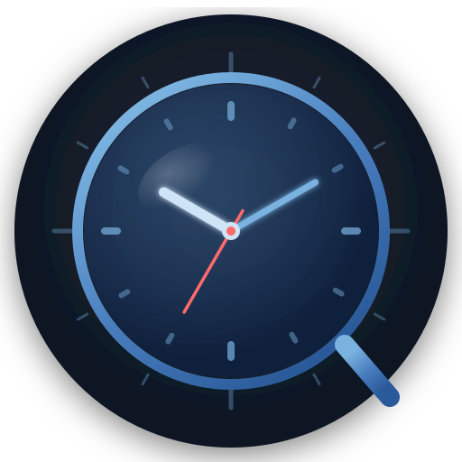

技术栈
现代化的桌面应用架构

Tauri 2.x
Rust 驱动的轻量级桌面壳
React 18
TypeScript 5 + Vite 5 构建
Tailwind CSS
毛玻璃效果 + 响应式设计
SQLite
rusqlite 嵌入式数据库
Zustand
轻量级状态管理
Recharts
数据可视化图表库

TimeLens自动记录前台应用使用时长，透明毛玻璃悬浮窗，多语言支持 基于 Tauri + React 构建，SQLite 持久化，Windows 原生体验
TimeLens 提供完整的屏幕时间追踪和桌面小组件解决方案
自动记录前台应用使用时长，支持每日总览、小时分布图表及 7 日趋势对比。
透明无边框、始终置顶的悬浮窗：模拟/数字时钟、可拖拽排序的待办列表、多模式计时器。
深色优先设计，全局使用背景模糊与微透明效果，打造原生级视觉体验。
为特定应用或分类设置每日使用限额，配置生产力目标并追踪达成进度。
通过浏览器扩展采集网页访问数据，分析各域名使用时长，与桌面应用数据合并展示。
一键开启专注时段，屏蔽干扰并记录深度工作时间，提升工作效率。
# 1. 克隆仓库
git clone https://github.com/PythonSmall-Q/TimeLens.git
cd TimeLens
# 2. 安装前端依赖
npm install
# 3. 启动开发服务器 + Tauri 窗口
npm run tauri:devNode.js ≥ 18、Rust ≥ 1.77、Tauri CLI 2.x
运行 npm install 安装前端依赖
运行 npm run tauri:dev 启动
运行 npm run tauri:build 打包
Rust 驱动的轻量级桌面壳
TypeScript 5 + Vite 5 构建
毛玻璃效果 + 响应式设计
rusqlite 嵌入式数据库
轻量级状态管理
数据可视化图表库
完整的环境搭建、架构说明与调试技巧。涵盖前后端开发流程、数据库结构、脚本参考等。
阅读更多 →系统整体架构图、模块划分、数据流说明。了解 Monitor 模块、Command 层、前端状态管理等核心设计。
阅读更多 →Rust Command 接口完整列表、前端服务层封装、类型定义与使用示例。快速查找可用 API。
阅读更多 →第三方小组件开发完整指南。Manifest 格式、渲染接口、权限系统与示例代码。
阅读更多 →为 TimeLens 添加新 UI 语言的详细步骤。涵盖 JSON 翻译、配置注册与测试验证。
阅读更多 →小组件开发指南的中文版本，方便国内开发者阅读。包含完整的中文示例与说明。
阅读更多 →